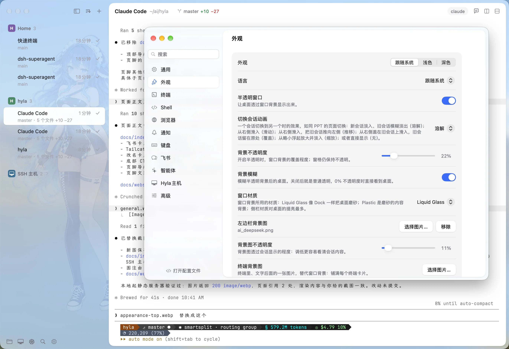
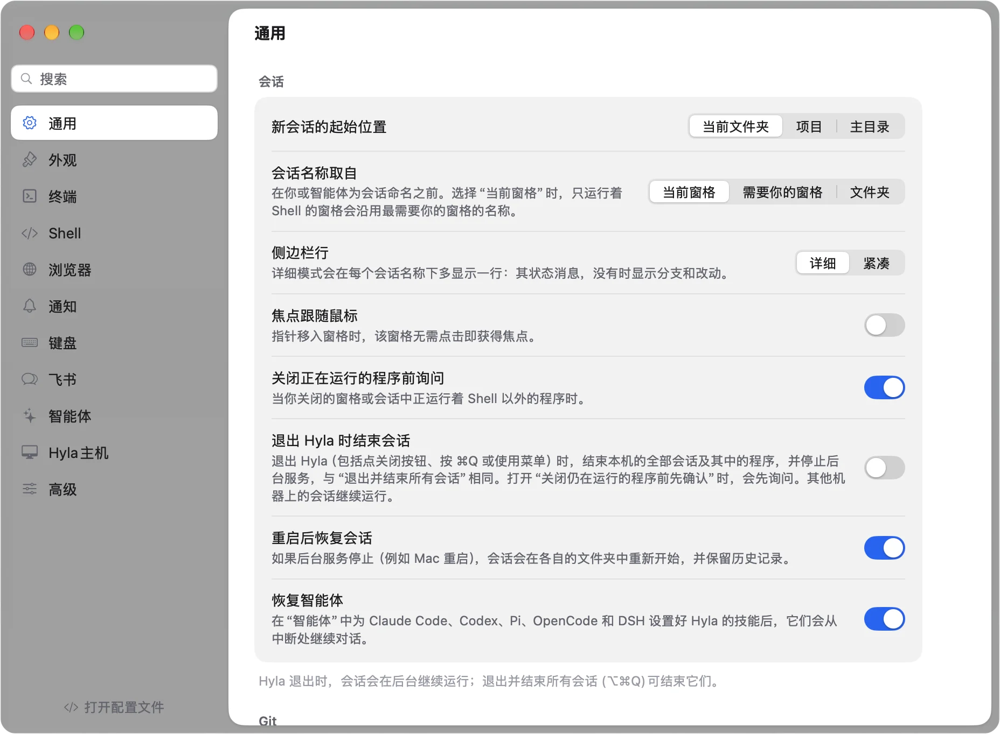

窗口关了，会话还在
会话运行在 hylad 里，不运行在应用里。退出 Hyla，服务器继续跑，测试继续转；再打开，每个窗格和回滚缓冲都在。
重启机器后也能恢复，智能体会接着上一次的对话。
面向编程智能体的终端 / macOS · Windows · Linux
Claude Code、Codex、DSH、开发服务器，各自住进一个会话。退出 Hyla，它们继续跑；再打开，窗格、目录和回滚缓冲都停在原处。
› 检查 checkout 的改动，跑测试
● Read src/checkout.ts
● Edited src/checkout.ts
+ if (subtotal(cart) < 20) return 0;
+ return round(total(cart), 2);
● Ran bun test
✓ 3 pass · 5 expect() calls
● 优惠券不会把小额订单减成负数。
窗口示意 · 用 HTML/CSS 重绘，真实截图见下方
01 为什么是 Hyla
不是把更多标签页塞进一个窗口，而是让每个任务都有自己的会话、自己的状态，和一个告诉你「现在该看谁」的边栏。
会话运行在 hylad 里，不运行在应用里。退出 Hyla，服务器继续跑，测试继续转；再打开，每个窗格和回滚缓冲都在。
重启机器后也能恢复，智能体会接着上一次的对话。
每个窗格是工作中、等待中、空闲、完成、失败或已退出。需要你处理的会话会浮上来，⌘J 直接跳过去。
智能体完成、失败或被权限卡住时，Hyla 会通知你。
一条 hyla 命令就能启动会话、拆分窗格、输入、等待、读屏。智能体可以在自己旁边跑测试，再把结果读回来。
Claude Code、Codex、Pi 和 OpenCode 都能装上 Hyla 的技能；DSH 也在终端和飞书里得到支持。
02 这个 fork 新增了什么
下面这些是上游没有、或者后来才在这里长出来的东西。它们不是皮肤，是每天真的会用到的部件。
feishu / lark
一个飞书应用，一台机器的 hylad。聊天里的每一轮都跑在 Hyla 自己的会话里：回答以卡片回来，权限请求和选项变成按钮，转录留在聊天里；回到终端还能接管。
tailcat
不需要 Tailscale 账号，也不需要两边都装 Tailscale。主机给出配对码，另一台机器贴上；中继只负责找到彼此，能直连时数据不经过它。默认关闭。
Tailcat 怎么用files
把会话的目录展开成树，点一个文件就在窗口里读；也可以把文件直接拖进窗格。不用离开终端去开编辑器。
sidebar
按项目或日期分组，按创建或最近使用排序，也可以摊平。每个项目一块彩色徽标，项目能折叠，名字能拖动；需要你处理的项目会染上提醒色。
appearance
窗口从完全不透明到半透明、模糊，再到 Liquid Glass 或磨砂 Plastic。背景图可以只放在边栏或终端卡片后面，透明度单独调。
fonts
字体菜单列出这台机器上真正安装的等宽字体，而不是固定的几个。字重从 100 到 900，Hyla 自己补了 200 和 300。
hyla the frog
红眼树蛙 Hyla 趴在窗口边上：有会话需要你时跳一下，智能体工作时探头看，一切安静时打盹。按它一下，它会回应；也可以在设置里关掉，或换成 Codex 的宠物。
quit
默认退出 Hyla 不结束任何会话。要用 Quit and End All Sessions 时，它结束这台机器的会话和 hylad，其他机器上的继续跑；也可以设成退出即结束。
hosts · k8s
SSH、Tailscale、Tailcat、WSL，甚至一个 K8s pod，都能像本地会话一样列出、通知、恢复。每台机器跑自己的 hylad，合上笔记本也不影响它们。
quick terminal
Control + ` 从任何会话里拉出快速终端，跑一条命令或看一眼日志；收起后回到原处，不用再开一个项目。
drops
拖到本地窗格，程序拿到路径；拖到远程窗格，Hyla 先通过 SFTP 上传，再把路径交给程序。
name & look
2.1.37 之前，这个项目叫 Kero。现在是自己的仓库、自己的名字、自己的橙色图标和红眼树蛙。第一次启动会把设置和会话迁移到 ~/.config/hyla（macOS 上是 ~/Library/Application Support/hyla），KERO_* 变量仍按 HYLA_* 生效。
03 从正在运行的 Hyla 里截的
下面两张截图取自本地正在运行的 Hyla（macOS，浅色外观）。这里只截设置窗口，没有把任何会话内容带上来。


04 安装
从 GitHub Releases 下载 macOS、Windows 或 Linux 版本。第一次打开后，用 Hyla › Install Command Line Tool… 把 hyla 放进 PATH。
macOS 构建没有 Apple Developer ID 签名。第一次打开请右键 Hyla.app → 打开；如果系统仍然拒绝，运行 xattr -d com.apple.quarantine /Applications/Hyla.app。
在本地开一个会话
$ hyla new -n fix-login -- claude
在 Linux 服务器上装服务端
$ curl -fsSL https://github.com/smallnest/hyla/releases/latest/download/install-server.sh | sh
Windows PowerShell
> irm https://github.com/smallnest/hyla/releases/latest/download/install-server.ps1 | iex
05 还在长
这个 fork 没有停在改名上。下面是最近几个版本里加进来的能力，按它们出现在边栏和设置里的样子排列。